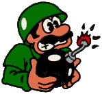
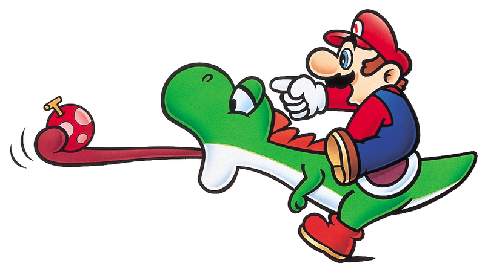
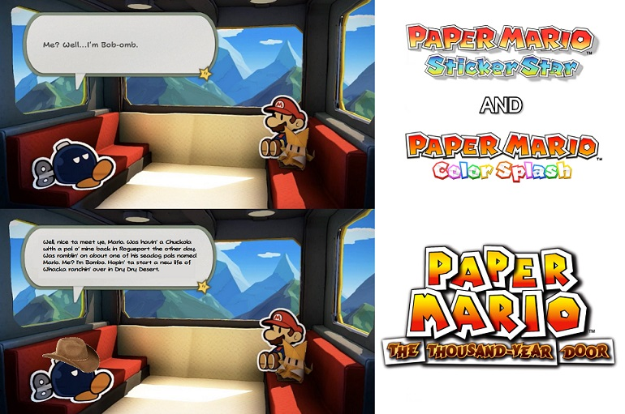

Enjoy a collection of Mario Oddity articles of mine, some old some new, that are small enough to be on one web page. Updated regularly! Enjoy.
Yoshi games (that aren’t Yoshi’s Island) sort of get the short end of the stick when it comes memorable Mario games. They attempt weird things and just get of forgotten so this article will be based on Yoshi’s Safari (also know as Yoshi’s Road Hunting in Japan). Released in 1993 for the SNES, it’s an on rails shooter where you ride Yoshi through Jewelry Land on a quest to assist King Fret and Prince Pine. You get to unleash a fury of super scope pellets on goombas, koopas, and even Koopalings in locations that look suspiciously like Super Mario World but aren’t! Already things are a little different for Mario. Our heroic plumber is only really involved because Peach is friends with the prince. We also have locations unlike other games. The enemy selection is nice and things get creative with the mechas some enemies and koopalings are armed with. Split between the Light and Dark Realm, the game goes along steadily with a map screen for each and colorful graphics. There is some platforming, where you must jump over something and sometimes there are branching paths within levels. When you finally face Bowser he’s huge, predating that trope in later games’ and armored. This game is hardcore!
Realistically this game is a little inconvenient to play if you insist on doing it authentically, since super scopes cost more than the games and are fiddly. Emulation works well in this case, and the game is truly worth checking out as a light duty, not too hard light gun game and the only of it’s kind for Mario. For some trivia, this is actually the first game where Peach is called Peach in America, not Super Mario 64 as commonly credited.
The most mundane Mario Oddity so far, yet the one that goes back the farthest in my life. Since I was a child I thought it was strange that Super Mario 64 and its remake are the only main games where Mario can punch. Mario 64 had a huge moveset to accompany the famous hero in a new and exciting 3D world from punching to kicking to ground pounding (borrowed from Yoshi) to wall jumping. Some of those moves prominently moved on, the ground pound, the triple jump mechanics, long jumping, and wall jumping, but distinctly not Mario’s one-two-three punch kick combo. Why?
Let's remember that punching actually comes from Super Mario RPG. Theere is was one of Mario's weaker moves when he doesn't have a better weapon. Super Mario Sunshine gave Mario FLUDD as the new gimmick. It is often activated with the shoulder buttons, freeing up the normal buttons. What are they used for in Sunshine? ‘A’ button is jump related and ‘B’ is for picking things up and a few other actions, not offensively however. Why did they leave that move out? Mario’s jumping is altered too to account for FLUDD, so perhaps Mario having too many attacks would distract from our buddy from Prof. E. Gadd?
Super Mario Galaxy replaces “punch” with a “spin” as an offensive move and one that extends jumping range and allows Mario to target a enemy when combined with a ground pound. Of note is that this is a power a luma gives Mario and not an innate ability. In various Mario Party games Mario but also many other characters can punch in some minigames.
In Super Mario Odyssey for the Nintendo Switch, the ability to punch remains lost. Instead Mario can utilized Cappy to either attack an enemy or possess them to utilize their unique abilities. It can also be a platform for Mario to boost his jump. Of note, during the boss fight with Knucklotec you get to punch the boss by taking control of its own fists and using it on its face. Hey boss, stop hitting yourself! In conclusion in each game after Super Mario 64 there is something else to focus on, and let’s not kid ourselves. What’s more iconic for Mario? Jumping around or imitating Mike Tyson?
In both games, ‘Things’ are real life 3D items in a paper world that must be collected and converted into either stickers or battle cards to be used. In Sticker Star, which we will abbreviate as ‘SS’, you can do this at one location in Decalburg. In Color Splash or ‘CS’ the player can ‘squeeze’ or transform them anytime you want. They are scattered throughout both games and the key for different battles and also puzzles on the overworld (and puzzles within battles!). CS has the extra mechanic of ‘replica' Things, more later.
Now let us start comparing. SS has a plethora of Thing stickers that the average player will not discover until attempting to donate everything to the museum. They are separated into categories based on what they do (cut, wind, suction, water, noise, bat, crush, light, electric, ball, quake, heat, fire, ice, shot, normal, shield, sleep, stop, explosion, misc). One can somewhat discern this by how they’re stored in the museum. Now the clever part, on many occasions the player can substitute one sticker for another in the correct category for the same result exactly or with varying damage. The trade off takes up less space in the sticker book as well, a valid strategy early in the game where space is scarce. Unfortunately the game does not provide hard numbers on how much they do and their descriptions are too busy sounding ‘cute’ or ‘witty’ to be straight on their function as well.
Now to CS, in response to critics it appeared they drastically simplified the Things. Not only are their fewer but the redundancy eliminated. In CS the physical dimensions of cards is no longer a mechanic so there isn’t a reason to offer alternatives outside of the replica system. The replicas cannot be used for puzzles however or for bosses, so they are inferior most of the time outside of having two of the same thing in the player’s deck. CS does have enemy cards to collect and that's not always simple, so perhaps that was another motive for reduction. Since all Things are necessary the player does not need to hunt them down, taking away some of the discovery aspect. CS’s museum continues to not be as laymen as it could be, but the player can practice the action commands of every single thing, something that some players never figure out in SS. (Including me and I’ve played through the game three times!)
Org. article date 9/29/17
Posted and edit: 2/24/20
This is highly outdated and not really relevant, but I posted this long ago on FF.net of all places and it’s worth a slot here. “Mario is Mental” (which I will not link) was a Game Theory episode with supposedly convincing evidence that our favorite hero Mario was not what he appeared to be. Is this true? Read on as we tackle some of their points.
Mario abusing Donkey Kong: Fair enough but this can easily be shrugged off as ‘early installment weirdness'. Just research the history of the arcade game. The original video mentioned a Game and Watch as proof of Mario’s abuse of the Kong but failed to mention that the game, as may G&W games were, was an edit of another game called “Mickey Mouse” with Mario and DK swapped in. Furthermore such a game is not canon, just like Mario being in the army or a cement factory (which happens in G&W games) isn’t canon.
Mario Mario, of the 64th Brooklyn division
Yoshi abuse: Official art shows Mario clearly pointing and NOT harming yoshi. Notice I did not claim Yoshi is not being struck. In Super Mario World, Yoshi was more animal like than we view him today. Are Mario’s actions not unlike how a person rides a horse? Dropping Yoshi in pit is optional. The jump boost is a game mechanic the player does not have to do.
It's like they knew..
Yoshi abuse bonus: It seems Nintendo noticed the mistaken implications of this mechanic so in later games like Super Mario Galaxy 2, if yoshi falls down a pit, you see him transform back into an egg. It was as if Nintendo was trying to give players extra assurance that yoshi is safe!
Murderous tendencies: Toads being blocks is early installment weirdness and frequently misunderstood at that. The Super Mario Bros manual is full of gems, such as the fact that not ALL bricks were alive. Only the power ups are their gifts to Mario. Branching into later games it is true that some of the enemies Mario can defeat don't look threatening. That does not change that they are a solider of Bowser.
Murderous tendencies bonus round: I'll give critics half a point with the case with the Wiggler in Mario 64. You can reason however that defeating him is the only way to get the star and his dialogue shows that he's clearly under the influence of Bowser, bringing us back to the ‘they’re a bad guy even if they don’t look like it’ concept.
Mario’s relationships: Apparently he is a player and not the kind you control with a game pad. Well, not really. The original video makes too much of a deal with Daisy in Super Mario Land. How can they be involved when Mario and Peach aren’t even official according to Nintendo? When you think about it, Mario’s only official girlfriend was Pauline and that’s from the 80s. That’s about the opposite of promiscuous me thinks...
Sibling rivalry: Critics get another half point for this one, as Mario does tease his brother in Mario Tennis. Still, they’re brothers! One would have to be jaded to see such and interaction and immediately think ‘psychopath’. I guess it's easy to forget our plumber's still human..
In conclusion: even during the original date below I wasn’t the first to debunk anything. Still, I came up with these rebuttals on my own which should be proof enough that any fan of Mario should be able to do the same and see that his theory was just that!
Org. article date: 10/29/17
Edited and posted: 2/24/20
I like all of the games in their own way. Unfortunately 2012's Paper Mario: Sticker Star is the scapegoat of the series, often considered the lowest point. While there is still contention in the fandom, generally it is agreed that Sticker Star's successor, 2016's Paper Mario: Color Splash improved the newer collectible battler style of Paper Mario. This section is not to prove that false but, with a mix of subjective and objective points, bring attention a couple of ways in which Color Splash is worse than Sticker Star! Warning: nitpicks ahead!
Well let me tell you, Brandon. That’s not your name? Whoops. (Unless it is.) Well anyway, in relation to Mario it can mean more than you think. Why wouldn’t it? Mario has been around for decades and in addition to the games, Mario has appeared in other medias from books, tv shows, movies, and comics to name a few. What’s more, Mario is of Japanese origins and localization can change things. This article will not be for picking apart every Mario theory or discrepancy ever. We already know that Nintendo can and has flip-flopped on certain matters over the years. Instead, let’s briefly define the terms and then go over some of the more interesting tidbits. Notice I’ll be using some TvTropes terms here, but nothing too hard to get.
Mario canon: Confirmed by licensed Nintendo GAMES at some point, however games (and the people making them) can contradict so this can be more of a spectrum than you think. Really then, this means whatever is up to date Mario wise. The emphasis on games is because other Mario media, particularly the older stuff, take liberties on certain details. Now these don’t come from nowhere, as they are still based on games, but they still aren’t considered official Mario adventures. Sometimes a fact can start unofficial but become adopted over time, such as Mario’s name being Mario Mario. (See links below)
Mario fanon: Think of all of the fan material Mario lovers have came up with! The Koopalings is a great example of this as game wise we don’t get as much as people think they do of their personalities from the games. The outlines are there in some cases, especially more recently where they show up more often, but much of what we think come from either the cartoons or even old school fansites like Lemmy’s Land.
Mario headcanon: A more personalized theory not widely believed among fans. Perhaps it came from media like unofficial strategy guides. Fanfiction and blogs would be the place to fall into the rabbit hole typically, but I find some of the stuff strategy guides say being just as interesting. Here’s an example, the Prima guide for Mario Kart Double Dash stated Peach and Daisy were cousins. A friend and I believed that was official for years because of that!
A bit of everything: Sometimes something is never stated but implied in games. Mario and Peach aren’t an official couple but games imply or lampshade it frequently. Same for Luigi and Daisy. Mario and co are literally actors, but they will take on different roles for the games for frenemy action. It goes on and on…
Recommended links: Mario Wiki:List of rumors and urban legends
And that is... scroll text boxes backwards. Paper Mario on N64, Paper Mario TTYD, and Super Paper Mario allow this but Sticker Star onward inexplicably does not. In Color Splash I oft found this really annoying because the dialogue there is actually good and sometimes I'd want to screenshot something I missed. I'm struggling to understand how and why this feature is missing. Origami King also omits this. Just...why? To further emphasize that the series is no longer an RPG?
So in the meantime enjoy this uh, meme thing.